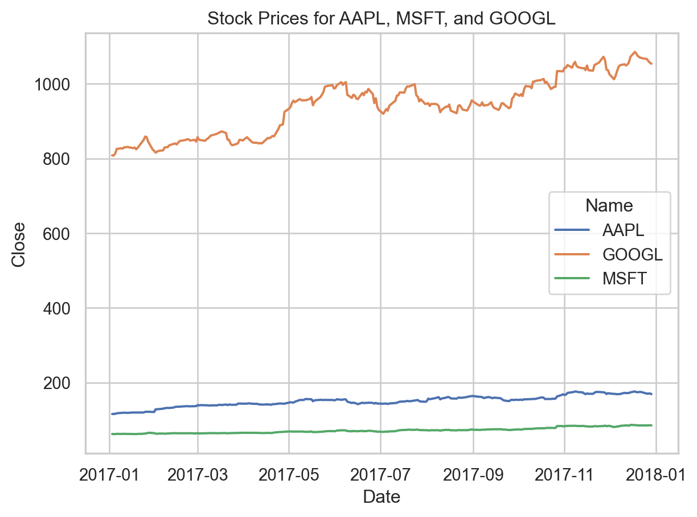
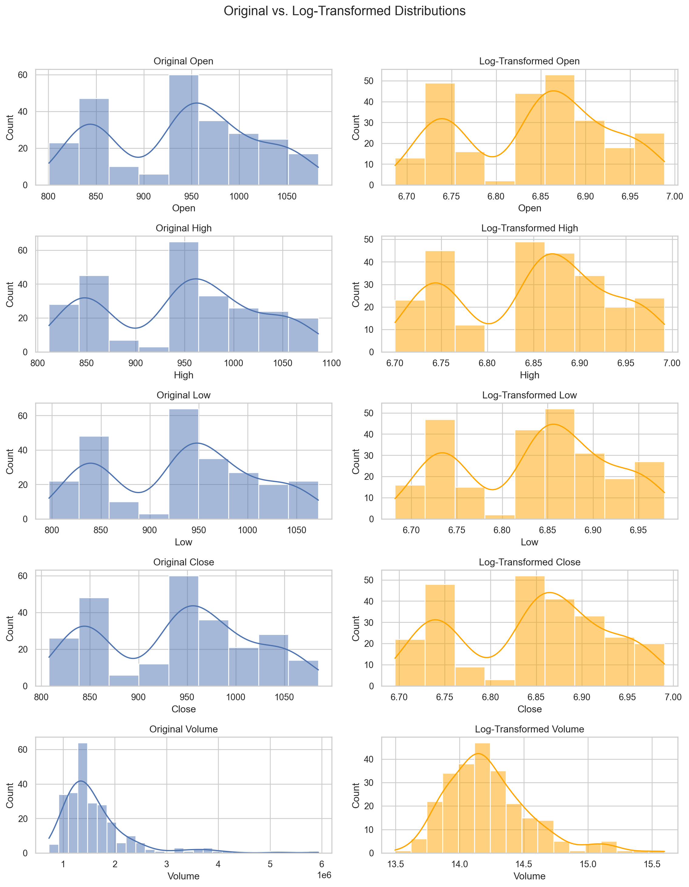
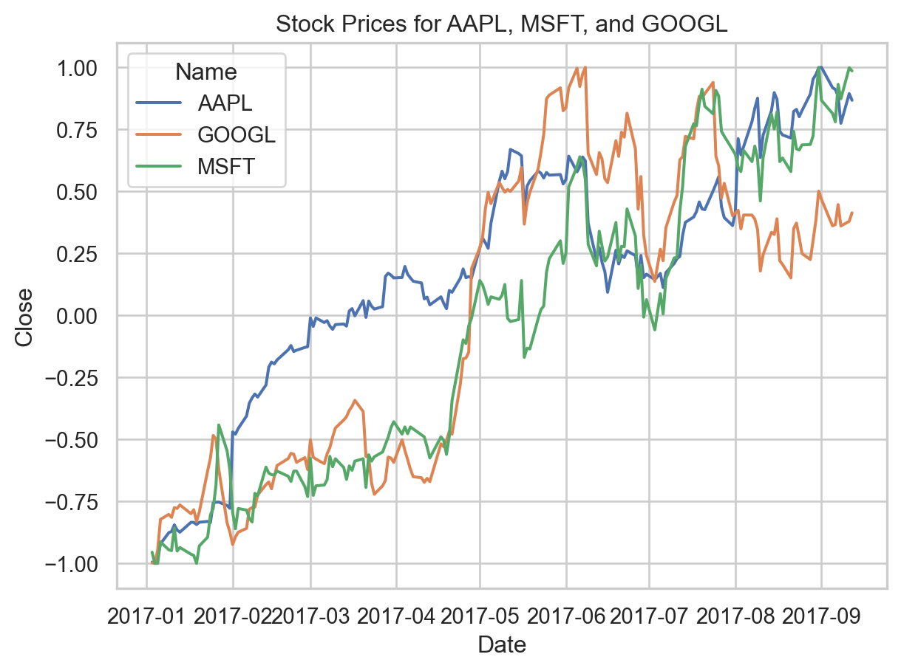
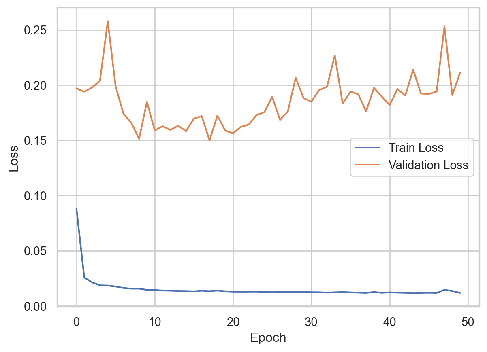
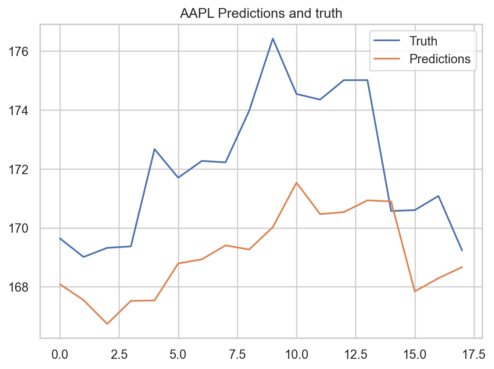
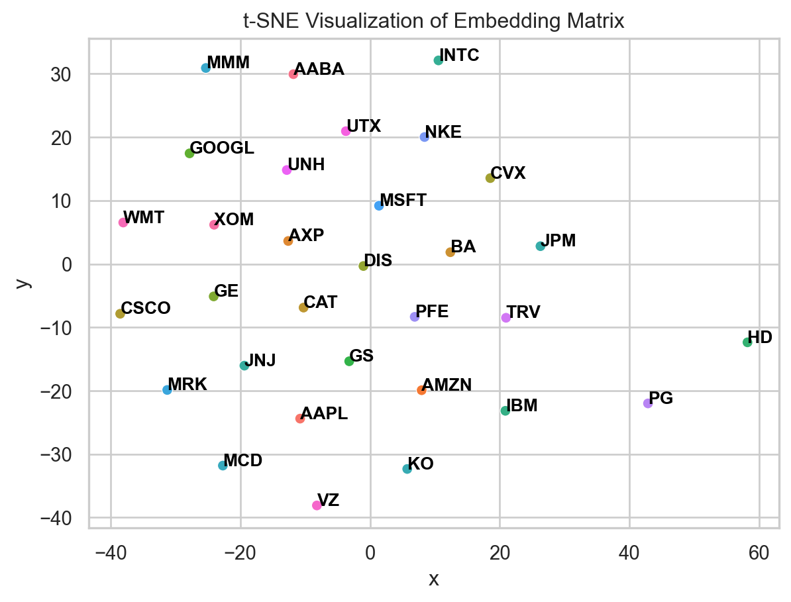

import numpy as np
import pandas as pd
import torch
import torch.nn as nn
from torch.utils.data import Dataset, DataLoader
from sklearn.preprocessing import MinMaxScaler
from sklearn.neighbors import NearestNeighbors
from sklearn.manifold import TSNE
import matplotlib.pyplot as plt
import seaborn as sns
import random
# for reproducibility
def set_seed(seed):
random.seed(seed)
np.random.seed(seed)
torch.manual_seed(seed)
set_seed(42)When you send a message to an AI model, how does it “know” what your words “mean”? It should go without saying that it is quite complicated, and the specific layers within a particular large language model (LLM) can vary a bit. I am not an expert on large language models, but I know they are a specific type of neural network. They use an architecture called a transformer and a technique called attention (this super cool graphic walks through some of the details).
The first step in this kind of neural network is called embedding. An embedding layer or embedding matrix allows the model to convert categorical or text-like inputs into numbers. For example, with an LLM, there may be hundreds of thousands of possible input words. With the embedding layer, the model convert each word to a list of 200 numbers (for example). Each word can then be compared to another, so similar words will have similar lists (called vectors) in this high dimensional space.
If you’re already feeling lost, don’t worry. We are going to learn about embedding matrices using a simpler type of neural network called a recurrent neural network, or RNN. This is used to predict sequences of things, like stock prices over time or words in a sentence, and leverages an embedding layer to help accomplish that. If you’re not interested in all the details, skip down to here to take a look at some of the results.
Introduction and setup
The goal of this project is to understand a little bit about how deep learning models work, and to learn about embedding matrices. To do this, we will develop a deep learning model to predict daily stock closing prices. We will use a Gated Recurrent Unit (GRU), a type of recurrent neural network (RNN) for sequence data, implemented in PyTorch. We will also explore the embedding matrix that the model learns during training, and see how it captures relationships between different stocks.
Libraries
Data
The data we will use is DJIA 30 Stock Time Series from Kaggle, which contains daily stock prices for the 30 companies in the Dow Jones Industrial Average (DJIA) from January 1, 2005 to December 31, 2017. We will focus on the closing prices of these stocks in 2017.
# Load the data
df = pd.read_csv("all_stocks_2017-01-01_to_2018-01-01.csv")
df.info()<class 'pandas.core.frame.DataFrame'>
RangeIndex: 7781 entries, 0 to 7780
Data columns (total 7 columns):
# Column Non-Null Count Dtype
--- ------ -------------- -----
0 Date 7781 non-null object
1 Open 7757 non-null float64
2 High 7772 non-null float64
3 Low 7762 non-null float64
4 Close 7781 non-null float64
5 Volume 7781 non-null int64
6 Name 7781 non-null object
dtypes: float64(4), int64(1), object(2)
memory usage: 425.7+ KBConvert the date column to datetime, and check for missing values.
# Convert the date column to datetime
df["Date"] = pd.to_datetime(df["Date"])
# Check for missing values
df.isnull().sum()
# Fill missing values
# It's safer to sort by ticker and date before filling to prevent data leakage across stocks
df.sort_values(by=["Name", "Date"], inplace=True)
df.ffill(inplace=True)Data Preparation
Now that we have the data, we can prepare it for the RNN model. First we will visualize the data for one stock. Then we will get the stock tickers do the training and testing splits needed for model training. Finally we will scale the data to make it usable for the model.
Visualize the data
Look at the data for just a few stocks
plt.clf()
sns.set_theme(style="whitegrid")
stocks_to_plot = ["AAPL", "MSFT", "GOOGL"]
sns.lineplot(x="Date", y="Close", hue = "Name", data=df[df["Name"].isin(stocks_to_plot)])
plt.title("Stock Prices for AAPL, MSFT, and GOOGL")
plt.show()
One problem right off the bat is that the prices are on completely different scales. So we will need to scale the data to be able to compare them.
Let’s look at some distributions of the features too:
ticker = "GOOGL"
df_temp = df[df["Name"] == ticker]
features_to_examine = ["Open", "High", "Low", "Close", "Volume"]
fig, axes = plt.subplots(len(features_to_examine), 2, figsize=(12, 16))
fig.suptitle('Original vs. Log-Transformed Distributions', fontsize=16)
for i, feature in enumerate(features_to_examine):
# Original Data
sns.histplot(df_temp[feature], ax=axes[i, 0], kde=True)
axes[i, 0].set_title(f'Original {feature}')
# Log-Transformed Data
sns.histplot(np.log1p(df_temp[feature]), ax=axes[i, 1], kde=True, color='orange')
axes[i, 1].set_title(f'Log-Transformed {feature}')
plt.tight_layout(rect=[0, 0.03, 1, 0.96])
plt.show()
I would say the log transformation helps with volume, but doesn’t make much of a difference for the open/high/low/close featuers.
df["LogVolume"] = np.log1p(df["Volume"])Getting Stock tickers
We will simply map each stock ticker to a number. The number is totally arbitrary.
stock_tickers = df["Name"].unique()
ticker_to_int = {ticker: i for i, ticker in enumerate(stock_tickers)}
df["TickerInt"] = df["Name"].map(ticker_to_int)Splitting the data
Splitting the data into training, validation, and testing sets is standard for most machine learning pipelines. We will use the first 70% as training, the next 15% as validation, and the last 15% as testing.
# Split the data into training, validation, and testing sets for each stock
train_df, val_df, test_df = [], [], []
for ticker in stock_tickers:
ticker_df = df[df["Name"] == ticker]
n_days = len(ticker_df)
train_end = int(n_days*0.7)
val_end = int(n_days*0.85)
train_df.append(ticker_df[:train_end])
val_df.append(ticker_df[train_end:val_end])
test_df.append(ticker_df[val_end:])
train_df = pd.concat(train_df)
val_df = pd.concat(val_df)
test_df = pd.concat(test_df)Scaling the data
We will rescale all the numerical values (Open, High, Low, Close, and Volume). This is a critical step. We will perform the scaling within each stock ticker group to a range of (-1, 1). This ensures the model learns from the relative price movements of each stock, and the (-1, 1) range is generally better for the GRU’s internal tanh activation functions.
The code below rebuilds the train_df, val_df, and test_df dataframes with the correctly scaled values, keeping the three-dataframe structure intact.
# Dictionary to store a scaler for each stock, needed for inverse transform later
scalers = {}
features_to_scale = ["Open", "High", "Low", "Close", "Volume"]
# Create empty lists to hold the scaled dataframes for each split
scaled_train_list = []
scaled_val_list = []
scaled_test_list = []
for ticker in stock_tickers:
# We'll use a (-1, 1) range, which is often better for GRU/LSTM models
scaler = MinMaxScaler(feature_range=(-1, 1))
# Isolate the data for the current ticker from each split
train_ticker_df = train_df[train_df["Name"] == ticker].copy()
val_ticker_df = val_df[val_df["Name"] == ticker].copy()
test_ticker_df = test_df[test_df["Name"] == ticker].copy()
# Fit the scaler ONLY on the training data for this specific stock
scaler.fit(train_ticker_df[features_to_scale])
scalers[ticker] = scaler # Save the scaler
# Transform the data for the current ticker across all splits
train_ticker_df[features_to_scale] = scaler.transform(train_ticker_df[features_to_scale])
val_ticker_df[features_to_scale] = scaler.transform(val_ticker_df[features_to_scale])
test_ticker_df[features_to_scale] = scaler.transform(test_ticker_df[features_to_scale])
# Add the scaled dataframes to our lists
scaled_train_list.append(train_ticker_df)
scaled_val_list.append(val_ticker_df)
scaled_test_list.append(test_ticker_df)
# Recombine the lists of dataframes back into our three main dataframes
train_df = pd.concat(scaled_train_list)
val_df = pd.concat(scaled_val_list)
test_df = pd.concat(scaled_test_list)Now plot that same data again:
plt.clf()
sns.set_theme(style="whitegrid")
stocks_to_plot = ["AAPL", "MSFT", "GOOGL"]
sns.lineplot(x="Date", y="Close", hue = "Name", data=train_df[train_df["Name"].isin(stocks_to_plot)])
plt.title("Stock Prices for AAPL, MSFT, and GOOGL")
plt.show()
You can now more reasonably compare the performance of those stocks, on a one-to-one basis.
Sequence creation
Now we will create 20 day (about 1 month of trading days) sequences of data for each stock.
def create_sequences(data, sequence_length, feature_cols, ticker_col, target_col):
xs, ys, ticker_idx = [], [], []
# Group by the stock name to process each individually
for _, ticker_df in data.groupby("Name"):
features = ticker_df[feature_cols].values
target = ticker_df[target_col].values
ticker_int = ticker_df[ticker_col].iloc[0]
# Create sequences for the current stock
for i in range(len(features)-sequence_length):
xs.append(features[i:(i+sequence_length)])
ys.append(target[i+sequence_length])
ticker_idx.append(ticker_int)
return np.array(xs), np.array(ys), np.array(ticker_idx)
sequence_length = 20
feature_cols = ["Open", "High", "Low", "Close", "LogVolume"]
ticker_col = "TickerInt"
target_col = "Close"
X_train, y_train, train_ticker_idx = create_sequences(train_df, sequence_length, feature_cols, ticker_col, target_col)
X_val, y_val, val_ticker_idx = create_sequences(val_df, sequence_length, feature_cols, ticker_col, target_col)
X_test, y_test, test_ticker_idx = create_sequences(test_df, sequence_length, feature_cols, ticker_col, target_col)Let’s quickly understand the dimensions of this data.
print(f"X_train shape: {X_train.shape}")
print(f"y_train shape: {y_train.shape}")
print(f"train_ticker_idx shape: {train_ticker_idx.shape}")
print(f"Unique tickers count: {len(set(train_ticker_idx))}")X_train shape: (4805, 20, 5)
y_train shape: (4805,)
train_ticker_idx shape: (4805,)
Unique tickers count: 31So the training data has dimension [4805, 20, 5], which means that there are 4805 days, each with 20 preceding window days, and 5 features. Then there are 4805 close prices, all corresponding to a list of 4805 tickers. But that list of tickers is repeptitive; there are 31 tickers in total, as we would expect.
Data loading with pytorch
Pytorch uses a specialized data architecture. We will first create the Dataset and then the DataLoader.
class StockDataset(Dataset):
def __init__(self, X, y, tickers):
self.X = torch.tensor(X, dtype=torch.float32)
self.y = torch.tensor(y, dtype=torch.float32)
self.tickers = torch.tensor(tickers, dtype=torch.long)
def __len__(self):
return len(self.X)
def __getitem__(self, idx):
return self.X[idx], self.y[idx], self.tickers[idx]
# Create datasets
train_dataset = StockDataset(X_train, y_train, train_ticker_idx)
val_dataset = StockDataset(X_val, y_val, val_ticker_idx)
test_dataset = StockDataset(X_test, y_test, test_ticker_idx)
# Create DataLoaders
BATCH_SIZE = 64 # A common batch size, can be tuned
train_loader = DataLoader(train_dataset, batch_size=BATCH_SIZE, shuffle=True)
val_loader = DataLoader(val_dataset, batch_size=BATCH_SIZE, shuffle=False)
test_loader = DataLoader(test_dataset, batch_size=BATCH_SIZE, shuffle=False)
# Let's inspect one batch to see what it looks like
data_features, data_target, data_ticker = next(iter(train_loader))
print(f"Feature batch shape: {data_features.size()}")
print(f"Target batch shape: {data_target.size()}")
print(f"Ticker batch shape: {data_ticker.size()}")Feature batch shape: torch.Size([64, 20, 5])
Target batch shape: torch.Size([64])
Ticker batch shape: torch.Size([64])GRU model setup
The GRU model is a modern RNN setup. I won’t get into all the details here, but basically there are special learned parameters for whether the ‘cell’ should reset or update at any given point. It gives the model some semblance of ‘memory’ that we would not otherwise have.
class StockGRU(nn.Module):
def __init__(self, num_stocks, embedding_dim, input_features, hidden_size, num_layers, dropout_prob=0.0):
# Create the model layers
super(StockGRU, self).__init__()
# Embedding layer
self.embedding = nn.Embedding(num_embeddings=num_stocks, embedding_dim=embedding_dim)
# GRU layer
self.gru = nn.GRU(
input_size = input_features + embedding_dim,
hidden_size = hidden_size,
num_layers = num_layers,
batch_first = True,
dropout = dropout_prob if num_layers > 1 else 0
)
# Map from GRU to a single predicted value
self.fc = nn.Linear(hidden_size, 1)
def forward(self, x_seq, stock_indices):
# Define forward pass
# Get embedding vector for each stock. shape (batch_size, embredding_dim)
embeddings = self.embedding(stock_indices)
# Unsqueeze and repeat the embeddings to match the sequence length of the features
seq_len = x_seq.shape[1]
embeddings = embeddings.unsqueeze(1).repeat(1, seq_len, 1)
# Combine with original features. shape (batch_size, seq_len, num_features+embedding_dim)
combined_seq = torch.cat((x_seq, embeddings), dim=2)
# pass to the GRU model. shape (batch_size, seq_len, hidden_size)
gru_out, _ = self.gru(combined_seq)
# Get output from last step. shape (batch_size, hidden_size)
last_time_step_out = gru_out[:, -1, :]
# Get final prediction. shape (batch_size, 1)
prediction = self.fc(last_time_step_out)
return predictionAnd now we can actually set up the model with our inputs:
device = torch.device("cpu")
model = StockGRU(num_stocks=len(stock_tickers),
embedding_dim=20,
input_features=len(feature_cols),
hidden_size=64,
num_layers=2,
dropout_prob=0.2).to(device)Training the model
Now we will train the model using backpropagation. Note that we have not actually set many values–the model is mostly learning the best parameter values based on the data we are giving it.
# Loss function and optimizer
criterion = nn.MSELoss()
optimizer = torch.optim.Adam(model.parameters(), lr=0.001)
# Training setup
num_epochs = 50
best_val_loss = float('inf')
train_losses = []
val_losses = []
print("Starting model training...")
for epoch in range(num_epochs):
model.train()
train_loss = 0.0
for features, targets, stock_ids in train_loader:
features, targets, stock_ids = features.to(device), targets.to(device), stock_ids.to(device)
# Zero the gradients to start
optimizer.zero_grad()
# Forward pass
outputs = model(features, stock_ids)
# Ensure target col has same shape as outputs
targets = targets.unsqueeze(1)
# Calculate loss
loss = criterion(outputs, targets)
# Backward pass and optimization
loss.backward()
optimizer.step()
train_loss += loss.item()
epoch_train_loss = train_loss / len(train_loader)
train_losses.append(epoch_train_loss)
# Validation
model.eval()
val_loss = 0.0
with torch.no_grad():
for features, targets, stock_ids in val_loader:
features, targets, stock_ids = features.to(device), targets.to(device), stock_ids.to(device)
outputs = model(features, stock_ids)
targets = targets.unsqueeze(1)
loss = criterion(outputs, targets)
val_loss += loss.item()
epoch_val_loss = val_loss / len(val_loader)
val_losses.append(epoch_val_loss)
print(f"Epoch {epoch+1}/{num_epochs}, Train Loss: {epoch_train_loss:.4f}, Val Loss: {epoch_val_loss:.4f}")
# Check for early stopping
if epoch_val_loss < best_val_loss:
best_val_loss = epoch_val_loss
torch.save(model.state_dict(), "best_model.pth")
print(f" -> Validation loss decreased. Saving best model.")
print("\n Training Complete")Starting model training...
Epoch 1/50, Train Loss: 0.0881, Val Loss: 0.1970
-> Validation loss decreased. Saving best model.
Epoch 2/50, Train Loss: 0.0257, Val Loss: 0.1940
-> Validation loss decreased. Saving best model.
Epoch 3/50, Train Loss: 0.0214, Val Loss: 0.1978
Epoch 4/50, Train Loss: 0.0187, Val Loss: 0.2039
Epoch 5/50, Train Loss: 0.0185, Val Loss: 0.2579
Epoch 6/50, Train Loss: 0.0177, Val Loss: 0.1990
Epoch 7/50, Train Loss: 0.0163, Val Loss: 0.1741
-> Validation loss decreased. Saving best model.
Epoch 8/50, Train Loss: 0.0157, Val Loss: 0.1658
-> Validation loss decreased. Saving best model.
Epoch 9/50, Train Loss: 0.0157, Val Loss: 0.1513
-> Validation loss decreased. Saving best model.
Epoch 10/50, Train Loss: 0.0146, Val Loss: 0.1848
Epoch 11/50, Train Loss: 0.0145, Val Loss: 0.1588
Epoch 12/50, Train Loss: 0.0140, Val Loss: 0.1627
Epoch 13/50, Train Loss: 0.0139, Val Loss: 0.1594
Epoch 14/50, Train Loss: 0.0136, Val Loss: 0.1632
Epoch 15/50, Train Loss: 0.0135, Val Loss: 0.1582
Epoch 16/50, Train Loss: 0.0133, Val Loss: 0.1697
Epoch 17/50, Train Loss: 0.0138, Val Loss: 0.1719
Epoch 18/50, Train Loss: 0.0135, Val Loss: 0.1499
-> Validation loss decreased. Saving best model.
Epoch 19/50, Train Loss: 0.0140, Val Loss: 0.1723
Epoch 20/50, Train Loss: 0.0134, Val Loss: 0.1588
Epoch 21/50, Train Loss: 0.0130, Val Loss: 0.1563
Epoch 22/50, Train Loss: 0.0130, Val Loss: 0.1621
Epoch 23/50, Train Loss: 0.0130, Val Loss: 0.1642
Epoch 24/50, Train Loss: 0.0130, Val Loss: 0.1728
Epoch 25/50, Train Loss: 0.0128, Val Loss: 0.1754
Epoch 26/50, Train Loss: 0.0130, Val Loss: 0.1894
Epoch 27/50, Train Loss: 0.0129, Val Loss: 0.1685
Epoch 28/50, Train Loss: 0.0125, Val Loss: 0.1761
Epoch 29/50, Train Loss: 0.0128, Val Loss: 0.2068
Epoch 30/50, Train Loss: 0.0126, Val Loss: 0.1883
Epoch 31/50, Train Loss: 0.0125, Val Loss: 0.1849
Epoch 32/50, Train Loss: 0.0124, Val Loss: 0.1955
Epoch 33/50, Train Loss: 0.0121, Val Loss: 0.1985
Epoch 34/50, Train Loss: 0.0124, Val Loss: 0.2269
Epoch 35/50, Train Loss: 0.0126, Val Loss: 0.1832
Epoch 36/50, Train Loss: 0.0123, Val Loss: 0.1941
Epoch 37/50, Train Loss: 0.0121, Val Loss: 0.1916
Epoch 38/50, Train Loss: 0.0118, Val Loss: 0.1762
Epoch 39/50, Train Loss: 0.0126, Val Loss: 0.1975
Epoch 40/50, Train Loss: 0.0119, Val Loss: 0.1896
Epoch 41/50, Train Loss: 0.0123, Val Loss: 0.1820
Epoch 42/50, Train Loss: 0.0121, Val Loss: 0.1964
Epoch 43/50, Train Loss: 0.0119, Val Loss: 0.1905
Epoch 44/50, Train Loss: 0.0117, Val Loss: 0.2139
Epoch 45/50, Train Loss: 0.0118, Val Loss: 0.1923
Epoch 46/50, Train Loss: 0.0120, Val Loss: 0.1919
Epoch 47/50, Train Loss: 0.0118, Val Loss: 0.1940
Epoch 48/50, Train Loss: 0.0147, Val Loss: 0.2531
Epoch 49/50, Train Loss: 0.0136, Val Loss: 0.1909
Epoch 50/50, Train Loss: 0.0118, Val Loss: 0.2113
Training CompleteNow we can plot the training and validation loss over time
plt.clf()
plt.plot(train_losses, label="Train Loss")
plt.plot(val_losses, label="Validation Loss")
plt.xlabel("Epoch")
plt.ylabel("Loss")
plt.legend()
plt.show()
Finally, we can run the final trained model on the test set, calculate the root mean square error (RMSE), and plot the predictions against actual values for a few stocks
First the test predictions:
# Load the best model
model.load_state_dict(torch.load("best_model.pth"))
model.to(device)
model.eval()
# Predict on test set
test_predictions = []
test_truth = []
all_stock_indices = []
with torch.no_grad():
for features, targets, stock_ids in test_loader:
features = features.to(device)
targets = targets.to(device)
stock_ids = stock_ids.to(device)
# Get predictions
outputs = model(features, stock_ids)
# Store results
test_predictions.append(outputs.cpu().numpy())
test_truth.append(targets.cpu().numpy())
all_stock_indices.append(stock_ids.cpu().numpy())
predictions_scaled = np.concatenate(test_predictions).flatten()
truth_scaled = np.concatenate(test_truth).flatten()
stock_indices_flat = np.concatenate(all_stock_indices).flatten()/var/folders/k9/2x8pccyj4l186_tbnbtkf8_40000gn/T/ipykernel_68888/523845198.py:2: FutureWarning:
You are using `torch.load` with `weights_only=False` (the current default value), which uses the default pickle module implicitly. It is possible to construct malicious pickle data which will execute arbitrary code during unpickling (See https://github.com/pytorch/pytorch/blob/main/SECURITY.md#untrusted-models for more details). In a future release, the default value for `weights_only` will be flipped to `True`. This limits the functions that could be executed during unpickling. Arbitrary objects will no longer be allowed to be loaded via this mode unless they are explicitly allowlisted by the user via `torch.serialization.add_safe_globals`. We recommend you start setting `weights_only=True` for any use case where you don't have full control of the loaded file. Please open an issue on GitHub for any issues related to this experimental feature.
Now the RMSE:
id_to_stock = {v: k for k, v in ticker_to_int.items()}
predictions_unscaled = []
truth_unscaled = []
# Find the index of the 'Close' column, which is our target variable
close_feature_index = features_to_scale.index("Close")
num_features = len(features_to_scale)
for i in range(len(predictions_scaled)):
stock_id = stock_indices_flat[i]
stock_name = id_to_stock[stock_id]
scaler = scalers[stock_name]
# Create dummy arrays with the shape the scaler expects (1, num_features)
dummy_pred = np.zeros((1, num_features))
dummy_truth = np.zeros((1, num_features))
# Place the single predicted and true values into the 'Close' column
dummy_pred[0, close_feature_index] = predictions_scaled[i]
dummy_truth[0, close_feature_index] = truth_scaled[i]
# Now, inverse transform the full arrays
pred_unscaled_full = scaler.inverse_transform(dummy_pred)
truth_unscaled_full = scaler.inverse_transform(dummy_truth)
# Extract just the unscaled 'Close' price
predictions_unscaled.append(pred_unscaled_full[0, close_feature_index])
truth_unscaled.append(truth_unscaled_full[0, close_feature_index])
rmse = np.sqrt(np.mean((np.array(predictions_unscaled) - np.array(truth_unscaled))**2))
print(f"RMSE: {rmse}")RMSE: 13.132668698887342Finally, we can plot the predictions and truth for a single stock:
# filter for just "AAPL"
curr_id = ticker_to_int["AAPL"]
curr_pred = np.array(predictions_unscaled)[stock_indices_flat == curr_id]
curr_truth = np.array(truth_unscaled)[stock_indices_flat == curr_id]
plt.clf()
plt.plot(curr_truth, label="Truth")
plt.plot(curr_pred, label="Predictions")
plt.title("AAPL Predictions and truth")
plt.legend()
plt.show()
Looking at the embedding matrix
Finally, we can look at the learned embedding matrix. Here it is:
# Extract embedding matrix
embedding_matrix = model.embedding.weight.data.numpy()
print(embedding_matrix)[[ 6.41760707e-01 -1.14142406e+00 4.12764177e-02 -1.36975384e+00
1.77361333e+00 -3.52475286e-01 -4.00140643e-01 -8.38561356e-01
-6.84329987e-01 -5.60092330e-01 -8.27509999e-01 7.75516629e-01
-1.59447634e+00 -1.48932010e-01 2.19432139e+00 -8.36391926e-01
-7.33397841e-01 1.00966477e+00 7.57936537e-01 1.48838091e+00]
[ 2.28843629e-01 -6.34771824e-01 -4.25800353e-01 1.41501889e-01
-1.14357151e-01 4.96075377e-02 -3.54390413e-01 8.75615418e-01
-3.55439842e-01 -3.59233171e-01 8.25989783e-01 -5.58731079e-01
1.97347537e-01 -3.23170364e-01 3.19219470e-01 -6.28627241e-01
1.02026381e-01 3.60481501e-01 1.44355941e+00 -6.72315061e-01]
[-1.25801301e+00 2.01196313e+00 -1.15901399e+00 -3.72060418e-01
-1.35630834e+00 8.74390900e-01 -9.35527384e-02 2.28866172e+00
-5.09589791e-01 1.08724749e+00 -8.40249419e-01 -7.38921463e-01
-8.40176582e-01 -8.78490448e-01 1.70360374e+00 1.12073787e-01
-1.61134228e-01 1.79364550e+00 -1.13537419e+00 1.35150492e+00]
[-1.18235564e+00 7.11894989e-01 -9.77480710e-01 5.70863128e-01
2.76621580e-01 -1.81894422e-01 -1.01884556e+00 1.24698436e+00
1.25808597e-01 1.48420542e-01 -8.38613603e-03 -2.04659745e-01
5.56867838e-01 -6.47398293e-01 -2.14188814e+00 -7.51484752e-01
2.65799356e+00 3.53560776e-01 -4.14970368e-02 4.83402967e-01]
[ 5.16533315e-01 5.04493713e-01 1.09677470e+00 3.10765933e-02
7.35663354e-01 -6.35114014e-01 -5.87375224e-01 9.33346748e-01
-1.68858850e+00 -7.89346337e-01 1.30741405e+00 4.86667722e-01
-1.90499455e-01 1.20735466e+00 1.19923532e+00 1.54018149e-01
6.46104217e-01 5.82522750e-01 1.03011751e+00 -3.71500790e-01]
[-7.38144219e-01 5.74839592e-01 2.45435178e-01 -3.95519644e-01
3.42203796e-01 1.10198808e+00 -5.08025773e-02 -3.16796750e-01
-9.96258855e-01 8.22116211e-02 3.78308117e-01 5.87060392e-01
6.02088213e-01 6.95299879e-02 -3.38151067e-01 5.05029261e-01
9.87961233e-01 -6.25898600e-01 1.03089356e+00 -2.51603633e-01]
[ 1.04667306e+00 2.77675778e-01 6.98742211e-01 4.52382207e-01
-5.00931680e-01 4.91192102e-01 -4.65178251e-01 -4.23827916e-01
-9.77671891e-02 1.61461961e+00 6.17139459e-01 5.25417507e-01
-3.62287819e-01 2.00952869e-02 1.31402194e-01 7.25262105e-01
-3.75107139e-01 9.37774658e-01 -6.49333715e-01 6.47423565e-01]
[ 2.36486435e-01 -3.10989171e-02 -1.40798843e+00 -6.05268240e-01
2.41226003e-01 -2.17434511e-01 -7.06100523e-01 8.76561180e-02
1.02581179e+00 -3.95266384e-01 -2.23896575e+00 4.81487125e-01
-2.37299418e+00 -4.74188268e-01 -1.16480279e+00 7.87901938e-01
-3.26828212e-01 -3.45807672e-01 -9.19755280e-01 2.09658816e-01]
[ 2.12038264e-01 -6.67127609e-01 2.35754550e-01 -1.06597662e+00
9.50986743e-01 -3.53556007e-01 5.75187445e-01 1.08244777e+00
-1.59113872e+00 6.50627613e-01 7.55966365e-01 2.02469826e+00
7.86027968e-01 -6.18678987e-01 -4.84882981e-01 2.31599122e-01
-8.66977692e-01 -1.52425599e+00 -1.14020240e+00 -4.21398729e-01]
[ 6.98262036e-01 1.46942258e+00 -1.36362243e+00 -7.67262697e-01
1.02550113e+00 -4.32120323e-01 5.60828388e-01 7.33975828e-01
-1.52646995e+00 -7.48657823e-01 4.68615741e-01 6.40668333e-01
-1.12349164e+00 3.73003095e-01 4.94431943e-01 1.35985792e+00
-2.40478769e-01 -4.12612468e-01 8.90145242e-01 -1.33954495e-01]
[ 4.86539826e-02 1.07103550e+00 1.27099109e+00 4.84874040e-01
3.01775545e-01 -7.37261176e-01 -2.07959223e+00 -1.51233757e+00
1.11954637e-01 4.10629004e-01 -1.86052829e-01 -2.20756841e+00
1.23627388e+00 5.25716543e-01 1.03054023e+00 -2.24707454e-01
3.66469562e-01 -4.35204834e-01 9.65668976e-01 1.59222209e+00]
[-4.46240092e-03 -7.41443336e-01 -1.03177381e+00 -7.14859247e-01
-5.74759781e-01 1.00528784e-01 3.99143368e-01 1.95066798e+00
-4.18759018e-01 -6.92139864e-02 -1.35553992e+00 3.71704012e-01
-1.14556514e-02 1.07477956e-01 1.77317396e-01 3.88715625e-01
-1.51529694e+00 2.19784784e+00 9.34992552e-01 1.33733964e+00]
[-7.70037472e-01 -4.35320251e-02 -3.53403836e-01 1.31359780e+00
1.75487056e-01 1.05343854e+00 3.99766453e-02 -6.68266192e-02
5.33480287e-01 6.63324893e-01 4.92043614e-01 2.17907891e-01
-8.44594657e-01 1.48420680e+00 -8.70472848e-01 -4.97142106e-01
-1.35921788e+00 4.83252347e-01 -2.31028110e-01 8.22829187e-01]
[ 5.14641285e-01 1.76229024e+00 9.96322930e-01 -9.29941177e-01
1.25862718e+00 1.95473492e-01 -1.87061000e+00 4.39966172e-02
-1.43068373e+00 -1.82693279e+00 -1.20898694e-01 7.42986739e-01
-2.30663776e-01 -7.91097939e-01 1.67091000e+00 3.45919654e-02
8.33615661e-01 -5.49168944e-01 -8.87610853e-01 -1.41350850e-01]
[ 3.68108898e-01 1.18101251e+00 2.24354848e-01 -1.21400379e-01
-4.72058922e-01 2.78243601e-01 2.70778000e-01 6.86221898e-01
-3.24653774e-01 -9.31926221e-02 -6.58364952e-01 -8.08802154e-03
5.30802310e-01 9.38842833e-01 -2.86634654e-01 -4.71362531e-01
-3.80043648e-02 1.44268826e-01 1.26471829e+00 7.23792315e-01]
[ 3.20058882e-01 -5.21111786e-01 8.28912020e-01 -6.09781861e-01
4.62739944e-01 1.21937907e+00 -2.22406054e+00 -1.22896826e+00
1.92272440e-01 -1.22381151e+00 1.77746153e+00 5.69071174e-02
-7.35171437e-01 -6.65008351e-02 1.19877326e+00 -1.00136876e+00
3.35576773e-01 8.68975520e-01 -1.80110729e+00 -1.29643095e+00]
[ 5.43128371e-01 3.10235471e-01 8.03864822e-02 1.07086718e-01
-4.00724858e-01 4.58084457e-02 -2.58035898e-01 -1.15368700e+00
4.50249046e-01 2.72949576e-01 -5.78305066e-01 2.61135492e-02
1.61181569e-01 -8.90061080e-01 1.87081623e+00 4.17281777e-01
5.43467164e-01 -7.42309451e-01 -5.56090236e-01 1.11632742e-01]
[ 3.27682644e-01 9.87897664e-02 2.70947313e+00 -6.54059887e-01
9.38856006e-01 -5.73074818e-01 -5.22129178e-01 -3.11149031e-01
-2.60551631e-01 -6.54898703e-01 7.25920871e-02 -2.51580477e-01
-2.35162705e-01 -8.02271962e-01 -4.88955021e-01 1.90907145e+00
8.03063452e-01 -7.45709598e-01 2.67324328e-01 2.61150211e-01]
[-1.69579470e+00 -6.92527831e-01 -3.69451344e-01 1.78828645e+00
1.11335099e-01 -7.97521994e-02 -1.20621756e-01 -1.17764795e+00
2.74306387e-01 6.33766174e-01 -1.93392247e-01 6.85137510e-01
-1.26898527e+00 1.58488715e+00 1.89203203e+00 -8.13378915e-02
-5.78456640e-01 8.85918081e-01 -4.17309850e-01 -2.71611035e-01]
[-1.12781622e-01 -4.63514835e-01 9.78085518e-01 2.12173685e-01
1.40672910e+00 -8.93225670e-01 -5.83315611e-01 -1.08696625e-01
-1.20838034e+00 8.63236904e-01 -1.33727717e+00 -6.70106709e-01
9.40750003e-01 -3.23135793e-01 -7.73113549e-01 8.10014606e-01
1.43356919e+00 -1.35363376e+00 -3.54191661e-01 -3.29997689e-02]
[ 9.12107468e-01 -9.00928527e-02 2.08457530e-01 -4.39462550e-02
-3.03371727e-01 -5.78399301e-01 4.13746417e-01 3.62069786e-01
-1.63393229e-01 -2.99655974e-01 -1.81800842e-01 8.06016624e-01
6.94573641e-01 -1.35317862e+00 7.41126597e-01 7.37512589e-01
-5.56269884e-01 -5.86349070e-01 -3.47791202e-02 -1.59378958e+00]
[-6.88430607e-01 2.39587933e-01 7.60497749e-01 1.54302821e-01
9.14610922e-01 -6.23073280e-01 -5.22587001e-01 6.83146536e-01
1.85526860e+00 -1.34141326e+00 5.53900957e-01 -2.62180716e-01
8.39321733e-01 1.92788208e-03 6.35610223e-01 9.66935396e-01
7.02802420e-01 1.43018365e+00 -1.08977807e+00 1.97634399e+00]
[-1.96323078e-02 1.15340948e+00 7.22166598e-01 -7.53698111e-01
-6.12139225e-01 1.36203957e+00 2.09366933e-01 1.13656439e-01
-4.42705512e-01 -9.02424216e-01 -6.00151896e-01 8.18189681e-01
-2.86801785e-01 6.47520646e-02 1.09528375e+00 1.16722301e-01
-1.67486898e-03 -9.14238989e-01 -1.21512938e+00 1.04001260e+00]
[-8.75952363e-01 2.52744532e+00 6.59829676e-01 6.45369887e-01
1.52580380e-01 1.16410542e+00 -1.28972030e+00 -1.39095306e+00
1.21657573e-01 -3.65171909e-01 2.19626039e-01 -1.49784982e+00
2.74529195e+00 1.91646862e+00 1.94143903e+00 -1.03649914e+00
-1.97551167e+00 9.97881114e-01 6.64939344e-01 -6.43275261e-01]
[-4.65051830e-01 -5.62630951e-01 -1.59458101e+00 -9.89392698e-01
-9.95415330e-01 2.74381995e+00 -9.09700930e-01 -3.61390203e-01
-4.35305923e-01 -2.10234709e-02 3.57831180e-01 -2.74807252e-02
-2.30223370e+00 -6.31345987e-01 1.00014031e+00 1.37772894e+00
-7.44744360e-01 -6.54106140e-01 -1.23502421e+00 1.83245480e+00]
[-1.05321300e+00 1.19157612e+00 2.03877017e-01 5.55495381e-01
5.67546725e-01 4.62194026e-01 -2.51522601e-01 4.98369366e-01
-1.73003101e+00 1.11012042e+00 4.78471488e-01 3.63174558e-01
1.54758620e+00 1.77372485e-01 -6.93245292e-01 -9.57159400e-01
-8.03570747e-01 -1.58129036e+00 -8.11112702e-01 -9.08355117e-02]
[-1.70232749e+00 1.02444135e-01 -1.82745802e+00 -7.60906458e-01
-6.14096403e-01 -7.87997663e-01 -8.02558064e-01 1.81637526e+00
3.64789337e-01 -2.53366685e+00 -1.38334417e+00 -9.96919274e-01
1.48949146e-01 -1.07850325e+00 1.87267706e-01 1.61198759e+00
1.11270535e+00 6.44365430e-01 1.02423680e+00 -4.42746639e-01]
[-7.52864704e-02 -3.42367172e-01 -5.93554676e-01 -1.31128287e+00
-6.29722774e-01 -7.12510169e-01 -2.21413404e-01 1.59659600e+00
4.30030137e-01 1.47203875e+00 -1.00230110e+00 5.61584055e-01
-1.98873138e+00 -4.28384483e-01 -9.50967729e-01 -3.58721912e-02
-8.15662920e-01 -2.73768187e-01 -1.72121361e-01 3.13028544e-01]
[ 1.16766788e-01 -1.68031126e-01 2.94870913e-01 -4.65907425e-01
-1.02340728e-01 -2.73402035e-02 -5.57118244e-02 -2.30663419e-02
5.27067900e-01 -5.88415146e-01 -1.77089900e-01 6.50333583e-01
1.44420698e-01 -2.52511144e-01 6.32990837e-01 1.84374288e-01
-1.66663778e+00 -2.23856688e-01 -4.58516449e-01 2.02023721e+00]
[ 8.82865071e-01 -1.35191762e+00 2.69959904e-02 9.25804257e-01
-2.83786118e-01 -1.89318255e-01 -1.26195145e+00 -9.30214524e-01
8.61930072e-01 -1.46914303e-01 6.78635120e-01 7.28050292e-01
-9.16099429e-01 3.56288463e-01 7.70073950e-01 -9.98479009e-01
4.64271843e-01 1.63385355e+00 1.11262836e-01 2.26415917e-01]
[ 5.68573594e-01 2.32138231e-01 1.67377460e+00 5.64837515e-01
-4.47527915e-01 3.94940376e-01 -6.66161299e-01 -4.98712391e-01
1.08154483e-01 3.45441396e-03 5.26595592e-01 -4.95949060e-01
-1.06596804e+00 -4.30209845e-01 7.50478268e-01 1.45355737e+00
8.27714801e-02 1.38327861e+00 2.80853033e-01 5.44879556e-01]]Great, still a bunch of numbers! We’ll use a technique called t-SNE to visualize it in a 2D space.
# Apply t-SNE
tsne = TSNE(n_components=2, random_state=1)
tsne_results = tsne.fit_transform(embedding_matrix)
# label each row with the corresponding stock ticker
tsne_df = pd.DataFrame(tsne_results, columns=['x', 'y'])
tsne_df['ticker'] = stock_tickers
# Plot
plt.clf()
sns.scatterplot(data=tsne_df, x='x', y='y', hue='ticker', legend=False)
# have the labels show up right on the points
for line in range(0,tsne_df.shape[0]):
plt.text(tsne_df.x[line], tsne_df.y[line], tsne_df.ticker[line], horizontalalignment='left', size='small', color='black', weight='semibold')
plt.title("t-SNE Visualization of Embedding Matrix")
plt.show()
We could also look at similarity based on K nearest neighbors in the embedding matrix
# We want to find the 5 nearest neighbors, so we set n_neighbors=6 to include the item itself
nn = NearestNeighbors(n_neighbors=6, metric='cosine')
nn.fit(embedding_matrix)
# Find the nearest neighbors for each stock
distances, indices = nn.kneighbors(embedding_matrix)
# Create a dictionary to store the results, mapping each stock to its neighbors
neighbors_dict = {}
for i, ticker in enumerate(stock_tickers):
# The first neighbor is the stock itself, so we take the next 5
neighbor_indices = indices[i][1:]
neighbors_dict[ticker] = [stock_tickers[idx] for idx in neighbor_indices]
# Convert to a DataFrame for a clear, tabular view
neighbors_df = pd.DataFrame.from_dict(neighbors_dict, orient='index', columns=[f'Neighbor_{j+1}' for j in range(5)])
neighbors_df| Neighbor_1 | Neighbor_2 | Neighbor_3 | Neighbor_4 | Neighbor_5 | |
|---|---|---|---|---|---|
| AABA | VZ | WMT | GS | IBM | MCD |
| AAPL | BA | UNH | WMT | GS | MRK |
| AMZN | GS | PG | NKE | UTX | UNH |
| AXP | UNH | MMM | CAT | MSFT | TRV |
| BA | IBM | GE | AAPL | CAT | XOM |
| CAT | TRV | MMM | BA | KO | GE |
| CSCO | XOM | WMT | HD | PG | AMZN |
| CVX | UTX | PG | UNH | GS | AABA |
| DIS | TRV | MRK | MMM | GE | UTX |
| GE | BA | IBM | DIS | CAT | AABA |
| GOOGL | PFE | JPM | MMM | XOM | KO |
| GS | AMZN | UTX | VZ | INTC | UNH |
| HD | MCD | CSCO | PG | WMT | TRV |
| IBM | NKE | JNJ | BA | KO | JPM |
| INTC | GS | PFE | BA | CAT | GOOGL |
| JNJ | WMT | IBM | XOM | PG | BA |
| JPM | NKE | IBM | MRK | GOOGL | XOM |
| KO | MMM | XOM | IBM | GOOGL | CAT |
| MCD | HD | WMT | AABA | PFE | JNJ |
| MMM | KO | GOOGL | TRV | AXP | CAT |
| MRK | DIS | JPM | IBM | GE | KO |
| MSFT | VZ | XOM | UNH | KO | GOOGL |
| NKE | IBM | PG | VZ | JPM | AMZN |
| PFE | GOOGL | INTC | TRV | MCD | JNJ |
| PG | NKE | AMZN | CVX | VZ | UTX |
| TRV | DIS | CAT | MMM | PFE | HD |
| UNH | AXP | GS | CVX | AMZN | AAPL |
| UTX | CVX | GS | AMZN | PG | DIS |
| VZ | NKE | AABA | MSFT | PG | GS |
| WMT | JNJ | MCD | AABA | XOM | CSCO |
| XOM | CSCO | KO | WMT | MSFT | GOOGL |